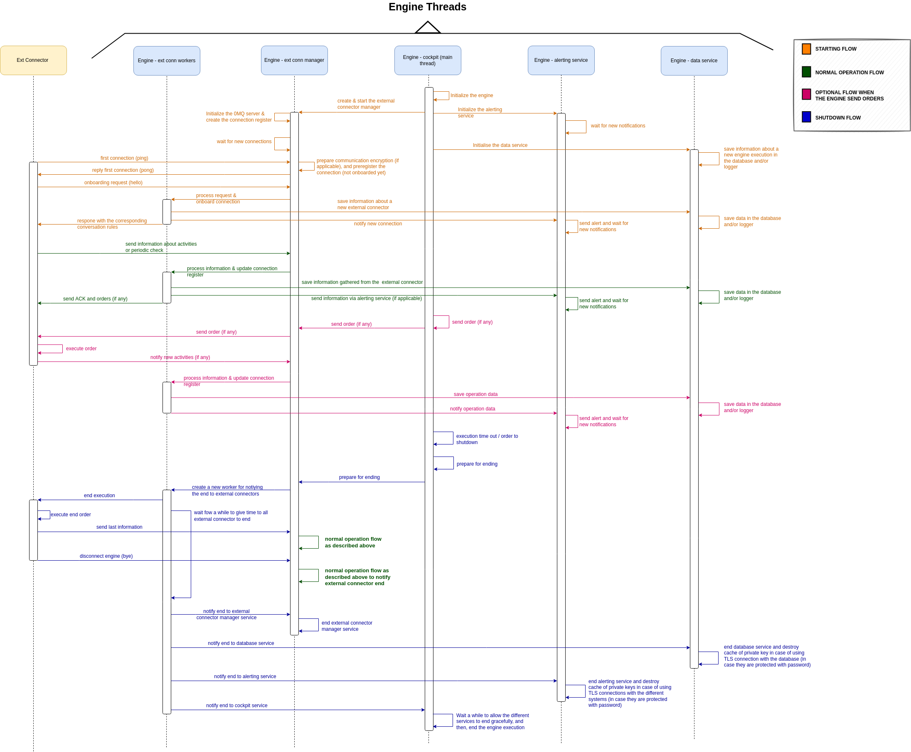

3. Engine Software Description¶
This component is the main orquestrator of Lope, we can say it is its heart. It controls all external connectors that are available in one engine execution. Since a picture is worth a thousand words, the best to describe how the engine works is an image (you might need to zoom in to see the details):
{kind=link}
As you can see, the engine is using different threads to leverage the power of parallel computing. The main threads are the following ones:
Main thread (a.k.a. engine cockpit service): This is the thread that controls the overall execution of this software piece. It initializes the other relevant threads and the logical components, as well as starting the process for shutting down (via interrupt signal or timeout).
External Connection Manager Service: This service is the one that oversees the interaction with external connectors, and listens the ZeroMQ socket of the engine.
External Connection Workers: These threads are used to process the messages received from the external connectors to avoid blocking the external connection manager service for processing received messages and activities created by the external connectors. Every message received create a new external connection worker, except the ping message that is replied by the external connection manager service directly. Additionally, one worker is created at the time of stopping the execution, as can be seen in the previous image. It orchestrates how the external connectors stop and send the last information they have, avoiding losing information.
Alerting Service: This thread is the one that sends the activities created by Lope to the different systems available, and it manages the respective connection with them
Data Service: This thread is the main one to storage the activities created by Lope and save them in the database, a simple file, or both.
Activities, or external activities, are described in detail in Activity Alerting & Storage, but here we can simply say that any action that the Lope does, any interaction with the target systems, is considered an activity. External connectors start and stop events are considered actions too, as well as the engine start and stop. Any activity is sent to the corresponding service to be stored or sent as an alert.
A minor comment about the communcation between engine threads for those that might be interested, they are implemented using go channels.